In this practical we use R to produce a series of maps depicting the spatial distribution of COVID-19 cases and fatalities using data obtained from the World Health Organisation (WHO).
The WHO gathered COVID-19 data from official sources and health ministry websites until March 2020, then switched to using regional dashboards and aggregated data from 22 March 2020 onwards. The figures, mainly from lab-confirmed cases, are updated weekly based on the reporting date, and may vary due to local differences in testing and reporting practices.
R packages
In this practical session, we will primarily utilise a range of R functions drawn from the following packages:
The tidyverse: is a collection of R packages designed for data science, providing a cohesive set of tools for data manipulation, visualization, and analysis. It includes core packages such as ggplot2 for visualization, dplyr for data manipulation, tidyr for data tidying, and readr for data import, all following a consistent and intuitive syntax.
The sf package: provides a standardised framework for handling spatial vector data in R based on the simple features standard (OGC). It enables users to easily work with points, lines, and polygons by integrating robust geospatial libraries such as GDAL, GEOS, and PROJ.
The tmap package: provides a flexible and powerful system for creating thematic maps in R, drawing on a layered grammar of graphics approach similar to that of ggplot2. It supports both static and interactive map visualizations, making it easy to tailor maps to various presentation and analysis needs.
Resources
All necessary packages should be installed already, but just in case:
# Main spatial packages
install.packages("sf")
# tmap dev version
install.packages("tmap", repos = c("https://r-tmap.r-universe.dev",
"https://cloud.r-project.org"))
# leaflet for dynamic maps
install.packages("leaflet"
# tidyverse for data wrangling
install.packages("tidyverse")Load packages:
The following datasets are provided for this practical:
Tabular data
WHO-COVID-19-global-data.csv: A comma-separated text
file containing weekly data on COVID-19 cases and deaths, organised by
the reporting dates to the WHO. The data is updated continuously
(although some countries have stopped reporting new cases) and is
available to download from here.Vector data
ne_110m_admin_0_countries: POLYGON geometry ESRI
Shapefile containing boundaries of the countries of the world. The data
is part of the Natural Earth public dataset available at 1:110
million scale.
ne_110m_wgs84_bounding_box: POLYGON geometry ESRI
Shapefile containing the bounding box of the ne_110 layers.
The data is part of the Natural Earth public dataset available at 1:110
million scale.
The following block of R code loads the COVID-19 data downloaded from the WHO:
# Path to WHO file; modify as needed
who_file <- "./data/data_covid/WHO-COVID-19-global-data.csv"
# Load data and replace missing values with NA
# Here we use read_csv() from readr (tydiverse)
covid_data <- read_csv(who_file, na = c("", "NA"))
# Inspect the data
head(covid_data)The file contains eight columns, including data for new and cumulative COVID-19 cases and COVID-19 related deaths. The next block of code prints the maximum and minimum values for the Date_reported column:
# This code pipes (%>%) the data frame into the summarise() function,
# which then calculates the minimum and maximum values while ignoring
# any missing values (thanks to na.rm = TRUE).
covid_data %>%
summarise(
min_value = min(Date_reported, na.rm = TRUE),
max_value = max(Date_reported, na.rm = TRUE)
)As shown above, the earliest reported cases and deaths date back to 05 January 2020, while the most recent entries are from 23 February 2025 — the date on which the data was downloaded for this practical.
To prepare the data for analysis, we will undertake several data wrangling tasks, specifically:
ne_110m_admin_0_countries
layer.# Prepare WHO file for analysis and plotting
covid_data_cleaned <- covid_data %>%
# Convert date column to Date format
# This column should already be in the right format, but we do this just in case
mutate(Date_reported = as.Date(Date_reported, format = "%d/%m/%Y"),
Month = format(Date_reported, "%m"), # Extract month as a two-digit string
Year = format(Date_reported, "%Y"), # Extract year as a four-digit string
) %>%
# Keep rows within the specified date range
filter(Date_reported >= as.Date("2020-01-05") & Date_reported <= as.Date("2024-12-31")) %>%
select(-WHO_region) %>% # Drop the 'WHO_Region' column
select(Date_reported, Month, Year, everything()) # Move 'month' and 'year' to the start
# Display the first few rows to verify the changes
head(covid_data_cleaned)The data is now ready for further analysis. To explore it, we plot COVID-19 cases and deaths over time for a subset of countries, which are identified by their two-digit country codes.
We plot data for the following countries:
Create plots of cumulative and new cases:
# Define a vector of country codes for the countries of interest.
selected_groups <- c("AU", "NZ", "US", "CA", "GB", "JP", "CN", "IN")
# Filter the original COVID-19 dataset to include only rows where the Country_code
# is one of the selected groups. This uses the pipe operator (%>%) from the dplyr package
# and the %in% operator to check for membership
df_filtered <- covid_data_cleaned %>%
filter(Country_code %in% selected_groups)
# Create a plot of cumulative cases
# Initialise the ggplot using the filtered dataframe.
# - x-axis: Date_reported (date when the data was reported)
# - y-axis: Cumulative_cases (total cases up to that date)
# - colour: differentiates the lines by Country_code
ggplot(df_filtered,
aes(x = Date_reported, y = Cumulative_cases, colour = Country_code)) +
# Add a line geometry to plot trends over time.
geom_line() +
# Use facet_wrap to create separate panels for each country code,
# with 3 panels (facets) per row
facet_wrap(~ Country_code, ncol = 3) +
# Customise the x-axis:
# - Set specific date breaks (1st January of each year from 2020 to 2025)
# - Label these breaks with the corresponding year.
scale_x_date(
breaks = as.Date(c("2020-01-01", "2021-01-01", "2022-01-01",
"2023-01-01", "2024-01-01", "2025-01-01")),
labels = c("2020", "2021", "2022", "2023", "2024", "2025")
) +
# Transform the y-axis to a logarithmic scale, which can help visualise exponential growth
scale_y_log10() +
# Titles and labels
labs(title = "Cumulative COVID-19 cases",
x = "Date",
y = "Cumulative cases",
colour = "Country code:") +
# Apply additional theme settings to customise the appearance:
theme(
legend.position = "none", # Do not show legend
axis.title = element_text(size = 10), # Decrease axis label font size
plot.title = element_text(size = 11), # Decrease plot title font size
panel.spacing = unit(1, "lines"), # Increase spacing between facets
axis.text.x = element_text(size = 8), # Decrease x-axis value font size
axis.text.y = element_text(size = 8) # Decrease y-axis value font size
)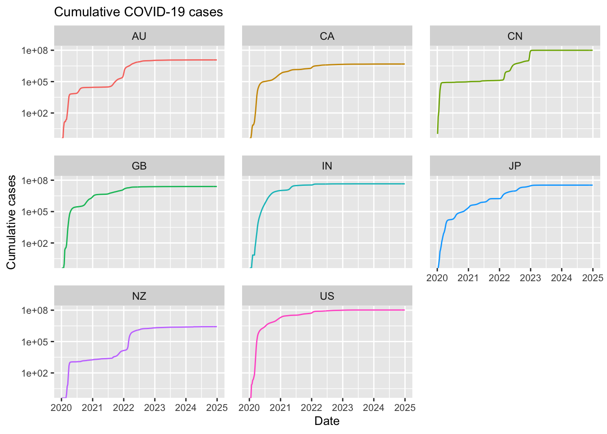
# Create a plot of new weekly cases
# Initialise a new ggplot for weekly new cases.
# - x-axis: Date_reported
# - y-axis: New_cases (number of new cases reported within the week)
# - colour: differentiates the lines by Country_code
ggplot(df_filtered,
aes(x = Date_reported, y = New_cases, colour = Country_code)) +
# Add line geometry to plot trends over time.
geom_line() +
# Use facet_wrap to create individual panels for each country, with 3 panels per row
facet_wrap(~ Country_code, ncol = 3) +
# Customise the x-axis with specific date breaks and labels (same as before)
scale_x_date(
breaks = as.Date(c("2020-01-01", "2021-01-01", "2022-01-01",
"2023-01-01", "2024-01-01", "2025-01-01")),
labels = c("2020", "2021", "2022", "2023", "2024", "2025")
) +
# Transform the y-axis to a logarithmic scale
scale_y_log10() +
# Titles and labels
labs(title = "Weekly new COVID-19 cases",
x = "Date",
y = "Weekly new cases",
colour = "Country code:") +
# Apply similar theme customisations to adjust the plot appearance
theme(
legend.position = "none", # Do not show legend
axis.title = element_text(size = 10), # Decrease axis label font size
plot.title = element_text(size = 11), # Decrease plot title font size
panel.spacing = unit(1, "lines"), # Increase spacing between facets
axis.text.x = element_text(size = 8), # Decrease x-axis value font size
axis.text.y = element_text(size = 8) # Decrease y-axis value font size
)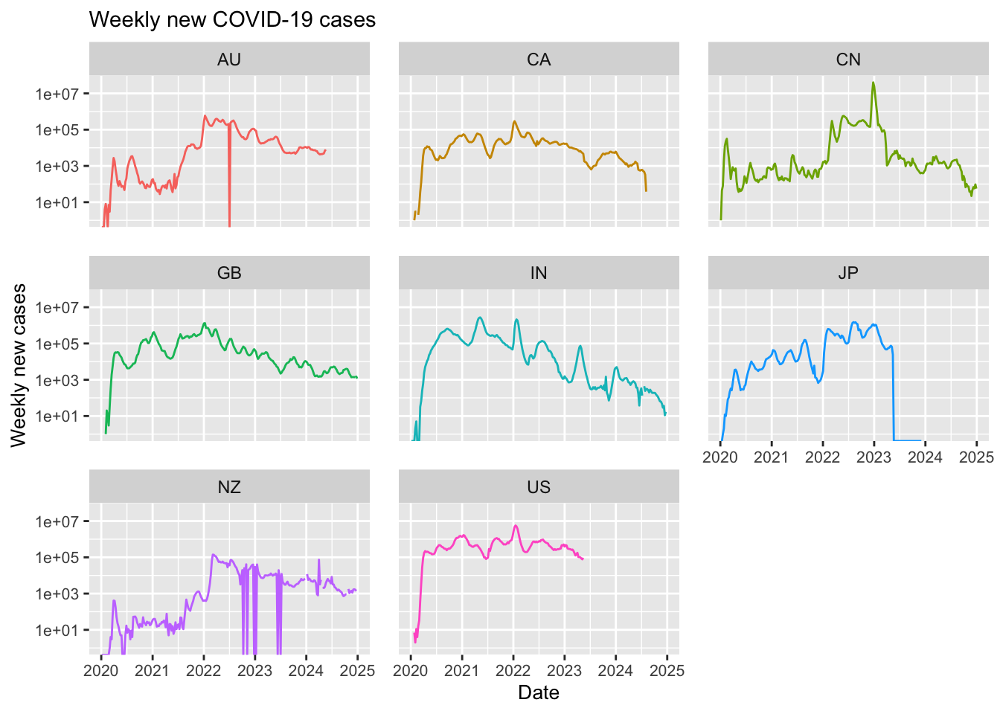
Next, create plots of cumulative and new deaths:
# Create a plot of cumulative deaths
ggplot(df_filtered,
aes(x = Date_reported, y = Cumulative_deaths, colour = Country_code)) +
geom_line() +
facet_wrap(~ Country_code, ncol = 3) + # 3 facets per row
# Set X axis scale manually and log scale for Y
scale_x_date(
breaks = as.Date(c("2020-01-01", "2021-01-01", "2022-01-01",
"2023-01-01", "2024-01-01", "2025-01-01")),
labels = c("2020", "2021", "2022", "2023", "2024", "2025")
) +
scale_y_log10() +
# Titles and labels
labs(title = "Cumilative COVID-19-related deaths",
x = "Date",
y = "Cumulative deaths",
colour = "Country code:") +
# Apply similar theme customisations to adjust the plot appearance
theme(
legend.position = "none", # Do not show legend
axis.title = element_text(size = 10), # Decrease axis label font size
plot.title = element_text(size = 11), # Decrease plot title font size
panel.spacing = unit(1, "lines"), # Increase spacing between facets
axis.text.x = element_text(size = 8), # Decrease x-axis value font size
axis.text.y = element_text(size = 8) # Decrease y-axis value font size
)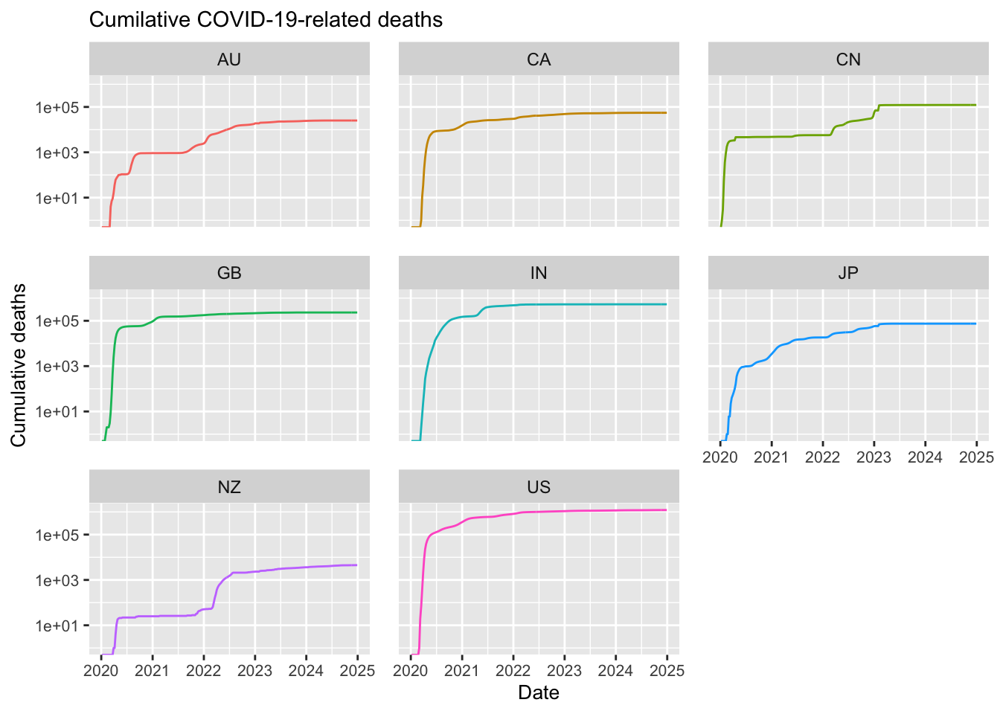
# Create a plot of new weekly deaths
ggplot(df_filtered,
aes(x = Date_reported, y = New_deaths, colour = Country_code)) +
geom_line() +
facet_wrap(~ Country_code, ncol = 3) + # 3 facets per row
# Set X axis scale manually and log scale for Y
scale_x_date(
breaks = as.Date(c("2020-01-01", "2021-01-01", "2022-01-01",
"2023-01-01", "2024-01-01", "2025-01-01")),
labels = c("2020", "2021", "2022", "2023", "2024", "2025")
) +
scale_y_log10() +
# Titles and labels
labs(title = "Weekly new COVID-19-related deaths",
x = "Date",
y = "Weekly new deaths",
colour = "Country code:") +
# Apply similar theme customisations to adjust the plot appearance
theme(
legend.position = "none", # Do not show legend
axis.title = element_text(size = 10), # Decrease axis label font size
plot.title = element_text(size = 11), # Decrease plot title font size
panel.spacing = unit(1, "lines"), # Increase spacing between facets
axis.text.x = element_text(size = 8), # Decrease x-axis value font size
axis.text.y = element_text(size = 8) # Decrease y-axis value font size
)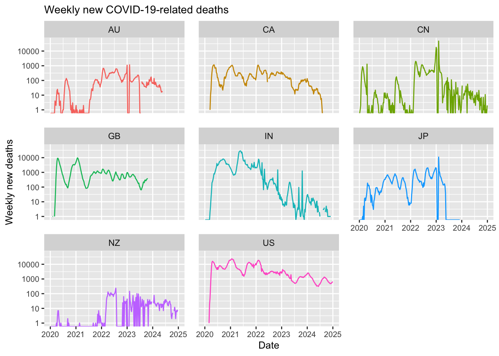
Note in the above that most of the selected countries have ceased reporting COVID-19 data. For example, Japan stopped reporting at the end of 2024, Australia discontinued reporting COVID-19 cases around mid-2024, and the United States halted reporting in mid-2023. Additionally, although new cases have never dropped to zero, some countries have experienced significant reductions; in India, for instance, the number of new weekly cases decreased dramatically from 1 million to just 100.
While the above plots provide valuable insights for a selected group of countries, it is impractical to create individual plots for all 240 countries and territories listed in the WHO dataset. Instead, visualising the complete data on a world map offers a more effective alternative, presenting a comprehensive global perspective.
In the following examples we produce a series of maps exploring the spatial and temporal trends in the COVID-19 data.
Load provided data layers:
# Specify the file paths for the spatial data
bnd <- "./data/data_covid/ne_110m_admin_0_countries.shp"
grd <- "./data/data_covid/ne_110m_graticules_30.shp"
box <- "./data/data_covid//ne_110m_wgs84_bounding_box.shp"
# Read in the spatial data using the 'read_sf' function from the sf package,
# which imports the shapefiles as spatial data frames
ne_cntry <- read_sf(bnd)
ne_grid <- read_sf(grd)
ne_box <- read_sf(box)Print a list of attribute column names in ne_cntry:
# The names() function retrieves the column names
# (i.e. attribute names) of the spatial data frame
names(ne_cntry)## [1] "featurecla" "scalerank" "LABELRANK" "SOVEREIGNT" "SOV_A3"
## [6] "ADM0_DIF" "LEVEL" "TYPE" "TLC" "ADMIN"
## [11] "ADM0_A3" "GEOU_DIF" "GEOUNIT" "GU_A3" "SU_DIF"
## [16] "SUBUNIT" "SU_A3" "BRK_DIFF" "NAME" "NAME_LONG"
## [21] "BRK_A3" "BRK_NAME" "BRK_GROUP" "ABBREV" "POSTAL"
## [26] "FORMAL_EN" "FORMAL_FR" "NAME_CIAWF" "NOTE_ADM0" "NOTE_BRK"
## [31] "NAME_SORT" "NAME_ALT" "MAPCOLOR7" "MAPCOLOR8" "MAPCOLOR9"
## [36] "MAPCOLOR13" "POP_EST" "POP_RANK" "POP_YEAR" "GDP_MD"
## [41] "GDP_YEAR" "ECONOMY" "INCOME_GRP" "FIPS_10" "ISO_A2"
## [46] "ISO_A2_EH" "ISO_A3" "ISO_A3_EH" "ISO_N3" "ISO_N3_EH"
## [51] "UN_A3" "WB_A2" "WB_A3" "WOE_ID" "WOE_ID_EH"
## [56] "WOE_NOTE" "ADM0_ISO" "ADM0_DIFF" "ADM0_TLC" "ADM0_A3_US"
## [61] "ADM0_A3_FR" "ADM0_A3_RU" "ADM0_A3_ES" "ADM0_A3_CN" "ADM0_A3_TW"
## [66] "ADM0_A3_IN" "ADM0_A3_NP" "ADM0_A3_PK" "ADM0_A3_DE" "ADM0_A3_GB"
## [71] "ADM0_A3_BR" "ADM0_A3_IL" "ADM0_A3_PS" "ADM0_A3_SA" "ADM0_A3_EG"
## [76] "ADM0_A3_MA" "ADM0_A3_PT" "ADM0_A3_AR" "ADM0_A3_JP" "ADM0_A3_KO"
## [81] "ADM0_A3_VN" "ADM0_A3_TR" "ADM0_A3_ID" "ADM0_A3_PL" "ADM0_A3_GR"
## [86] "ADM0_A3_IT" "ADM0_A3_NL" "ADM0_A3_SE" "ADM0_A3_BD" "ADM0_A3_UA"
## [91] "ADM0_A3_UN" "ADM0_A3_WB" "CONTINENT" "REGION_UN" "SUBREGION"
## [96] "REGION_WB" "NAME_LEN" "LONG_LEN" "ABBREV_LEN" "TINY"
## [101] "HOMEPART" "MIN_ZOOM" "MIN_LABEL" "MAX_LABEL" "LABEL_X"
## [106] "LABEL_Y" "NE_ID" "WIKIDATAID" "NAME_AR" "NAME_BN"
## [111] "NAME_DE" "NAME_EN" "NAME_ES" "NAME_FA" "NAME_FR"
## [116] "NAME_EL" "NAME_HE" "NAME_HI" "NAME_HU" "NAME_ID"
## [121] "NAME_IT" "NAME_JA" "NAME_KO" "NAME_NL" "NAME_PL"
## [126] "NAME_PT" "NAME_RU" "NAME_SV" "NAME_TR" "NAME_UK"
## [131] "NAME_UR" "NAME_VI" "NAME_ZH" "NAME_ZHT" "FCLASS_ISO"
## [136] "TLC_DIFF" "FCLASS_TLC" "FCLASS_US" "FCLASS_FR" "FCLASS_RU"
## [141] "FCLASS_ES" "FCLASS_CN" "FCLASS_TW" "FCLASS_IN" "FCLASS_NP"
## [146] "FCLASS_PK" "FCLASS_DE" "FCLASS_GB" "FCLASS_BR" "FCLASS_IL"
## [151] "FCLASS_PS" "FCLASS_SA" "FCLASS_EG" "FCLASS_MA" "FCLASS_PT"
## [156] "FCLASS_AR" "FCLASS_JP" "FCLASS_KO" "FCLASS_VN" "FCLASS_TR"
## [161] "FCLASS_ID" "FCLASS_PL" "FCLASS_GR" "FCLASS_IT" "FCLASS_NL"
## [166] "FCLASS_SE" "FCLASS_BD" "FCLASS_UA" "geometry"As seen above, the ne_cntry layer contain 169 attribute
columns. Since we do not need all this information, we use the following
code to drop the unwanted columns and retain only the relevant
attributes:
# Define a vector of column names to retain:
# - "NAME": Country name
# - "POP_EST": Population estimate
# - "CONTINENT": Continent name
# - "REGION_UN": United Nations region
# - "SUBREGION": Subregion
# - "ISO_A2": ISO country code (to be renamed later)
# - The geometry column name is extracted using attr(ne_cntry, "sf_column")
ne_cntry_keep <- c("NAME", "POP_EST", "CONTINENT",
"REGION_UN", "SUBREGION", "ISO_A2", attr(ne_cntry, "sf_column"))
# Use dplyr's select() function to retain only the specified columns from ne_cntry
# Then, rename the "ISO_A2" column to "Country_code" for clarity
ne_cntry <- ne_cntry %>%
select(all_of(ne_cntry_keep)) %>%
rename(Country_code = ISO_A2)
# Print the first few rows of the cleaned ne_cntry object to verify the changes
head(ne_cntry)In our first example, we will create a map displaying the total
number of COVID-19 cases and deaths. To achieve this, we first aggregate
the weekly data by summing all reported cases and deaths, and then we
join this new data with the ne_cntry dataset.
The dplyr package offers a suite of join functions that simplify the process of merging data frames by aligning rows based on common key variables. These functions enable you to combine related datasets in a way that suits your analytical needs:
inner_join(): Returns only those rows from the first
data frame (x) that have a corresponding match in the
second data frame (y). This operation is equivalent to an
intersection, ensuring that the resulting dataset only
contains observations that appear in both datasets.
left_join(): Retains all rows from the first data
frame (x) and attaches matching rows from the second data
frame (y). If a match is not found in y, the
resulting dataset will include NA values for the columns
coming from y. This is particularly useful when you want to
preserve the full context of your primary dataset while supplementing it
with additional details from another source.
right_join(): The mirror image of
left_join(), this function keeps all rows from the second
data frame (y) and appends matching data from the first
data frame (x). Rows in y without a
corresponding match in x will have NA values
for the columns from x.
full_join(): Combines all observations from both
data frames (x and y), effectively taking the
union of the two datasets. For rows where a match
cannot be found, the resulting data frame will display NA
for the missing values. This comprehensive approach is ideal when you
need a complete overview of the data from both sources, regardless of
whether every observation has a direct counterpart.
For our purposes, we will perform a full_join:
# Calculate total COVID-19 cases and deaths by country
# Group the cleaned COVID data by the Country_code field
covid_total <- covid_data_cleaned %>%
group_by(Country_code) %>%
summarise(
# Sum new cases per country.
# Use pmax(New_cases, 0) to treat any negative values as zero,
# and na.rm = TRUE to ignore missing values
Cases = sum(pmax(New_cases, 0), na.rm = TRUE),
# Sum new deaths per country, also treating negative values as zero
Deaths = sum(pmax(New_deaths, 0), na.rm = TRUE),
# Drop the grouping structure after summarisation
.groups = 'drop'
)
# Merge the spatial data (ne_cntry) with the summarised COVID totals (covid_total)
# The join is performed on the common field "Country_code"
ne_cntry_covid_total = full_join(ne_cntry, covid_total, by = join_by(Country_code))
# Print the names of the available fields in the merged dataset
names(ne_cntry_covid_total)## [1] "NAME" "POP_EST" "CONTINENT" "REGION_UN" "SUBREGION"
## [6] "Country_code" "geometry" "Cases" "Deaths"The above confirms that the join operation was successful, with every total COVID-19 data entry now linked to a corresponding country polygon.
The next bock of code plots the data with tmap:
# Plot total COVID-19 cases
tm_shape(ne_cntry_covid_total) +
# Fill each country polygon based on its "Cases" attribute
# The fill.scale applies a square-root transformation to the values,
# using the "brewer.pu_bu" colour palette
tm_fill(fill = "Cases",
fill.scale = tm_scale_continuous_sqrt(values = "brewer.pu_bu"),
fill.legend = tm_legend(title = "Cases \n[total]")) +
# Set the coordinate reference system (CRS) to the Robinson projection,
# which is commonly used for world maps
tm_crs("+proj=robin") +
# Adjust the layout by removing the frame around the map
tm_layout(frame = FALSE) +
# Draw borders around each country polygon in black
tm_borders(col = "black") +
# Add a scale bar to the map
tm_scalebar(position = c("left", "center"), breaks = c(0,2500,5000), width = 20) +
# Add a title to the map with a specified text size
tm_title("Total COVID-19 cases", size = 1) +
# Overlay an additional spatial layer (the bounding box) with black borders
tm_shape(ne_box) + tm_borders("black")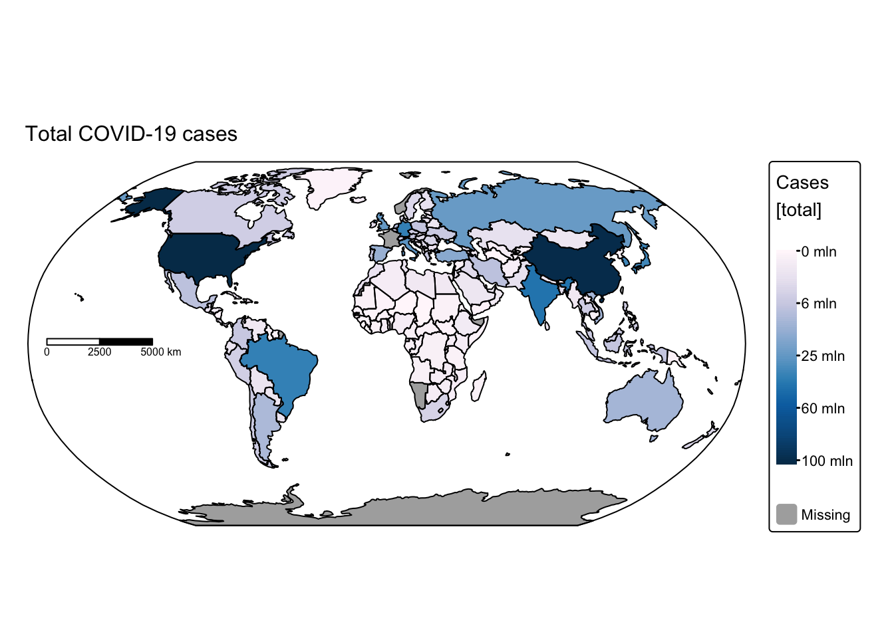
# Plot total COVID-19 deaths
tm_shape(ne_cntry_covid_total) +
# Fill each country polygon based on its "Deaths" attribute
# A square-root transformation is applied to the fill values using the "brewer.pu_rd" palette
tm_fill(fill = "Deaths",
fill.scale = tm_scale_continuous_sqrt(values = "brewer.pu_rd"),
fill.legend = tm_legend(title = "Deaths \n[total]")) +
# Set the projection to Robinson for a balanced world view
tm_crs("+proj=robin") +
# Remove the default frame around the map
tm_layout(frame = FALSE) +
# Draw black borders around the country polygons
tm_borders(col = "black") +
# Add a scale bar similar to the cases plot
tm_scalebar(position = c("left", "center"), breaks = c(0,2500,5000), width = 20) +
# Add a title for the deaths map
tm_title("Total COVID-19 deaths", size = 1) +
# Overlay the bounding box to provide geographic context
tm_shape(ne_box) + tm_borders("black")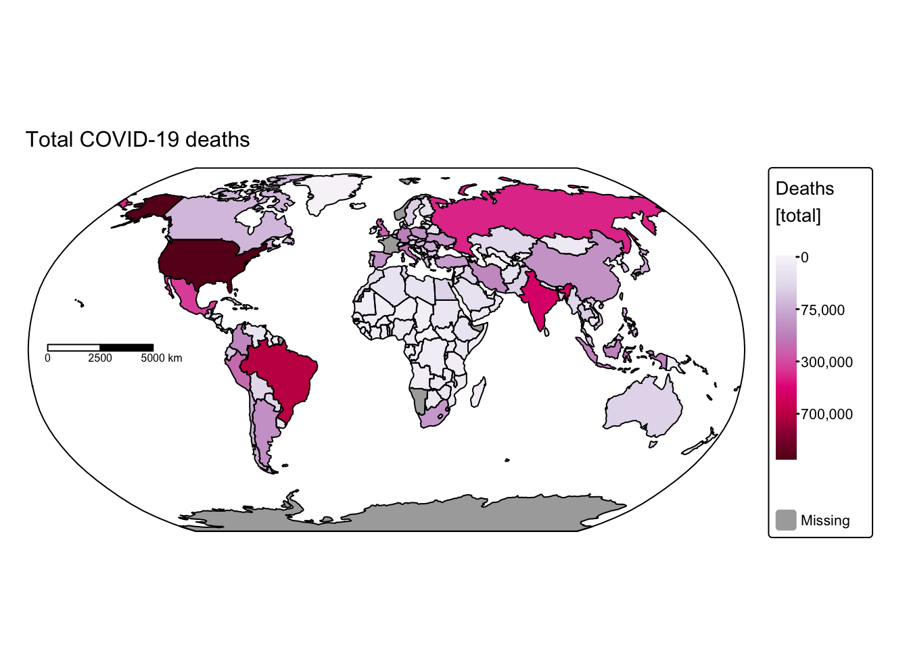
These maps rapidly convey insights that would have been difficult to discern using conventional data visualisation techniques. For instance, African nations reported significantly fewer cases and deaths compared with the rest of the world. This discrepancy might be attributable either to under‐reporting or to lower population density and reduced mobility, which decrease interactions among different groups. Conversely, it is staggering to observe that some countries recorded more than 100 million cases and over 700,000 COVID‑19‑related deaths.
Next, we will create a series of maps displaying the annual totals of
COVID-19 cases and deaths. To achieve this, we aggregate the weekly data
by summing all reported cases and deaths for each year, and then we join
this new yearly data with the ne_cntry dataset.
Once again, we will perform a full_join:
# Calculate yearly COVID cases and deaths by grouping
# the cleaned data by Year and Country_code
covid_years <- covid_data_cleaned %>%
group_by(Year, Country_code) %>%
summarise(
# For each group, calculate the total number of cases
# pmax() ensures that any negative New_cases are treated as zero
Cases = sum(pmax(New_cases, 0), na.rm = TRUE),
# Similarly, calculate the total number of deaths, treating negatives as zero
Deaths = sum(pmax(New_deaths, 0), na.rm = TRUE),
# Drop the grouping structure after summarising to return an ungrouped data frame
.groups = 'drop'
)
# Join the spatial data (ne_cntry) with the yearly COVID data (covid_years)
# using the common field "Country_code".
ne_cntry_covid = full_join(ne_cntry, covid_years, by = join_by(Country_code))
# Print the names of the available columns in the merged spatial dataset,
# which now includes attributes from both the country boundaries and COVID data
names(ne_cntry_covid)## [1] "NAME" "POP_EST" "CONTINENT" "REGION_UN" "SUBREGION"
## [6] "Country_code" "geometry" "Year" "Cases" "Deaths"The above confirms that the join operation was successful, with every yearly COVID-19 data entry now linked to a corresponding country polygon.
The next bock of code plots the data with tmap:
# Use tm_facets_wrap() to plot one map for each year
# Create a faceted map for COVID-19 cases
# Filter out rows with NA for Year to ensure proper faceting
tm_shape(ne_cntry_covid[!is.na(ne_cntry_covid$Year), ]) +
# Fill the country polygons based on the total 'Cases' attribute
# A square-root transformation is applied to better visualise differences,
# using the "brewer.pu_bu" colour palette for a consistent colour scheme
tm_fill(fill = "Cases",
fill.scale = tm_scale_continuous_sqrt(values = "brewer.pu_bu"),
fill.legend = tm_legend(title = "Cases \n[total]")) +
# Set the coordinate reference system to Miller projection for a global map view
tm_crs("+proj=mill") +
# Create facets based on the "Year" attribute, arranging them in 2 columns
tm_facets_wrap(by = "Year", ncol = 2) +
# Add country borders to the faceted map for additional clarity
# The borders are drawn over the existing map
tm_shape(ne_cntry_covid) + tm_borders(col = "black")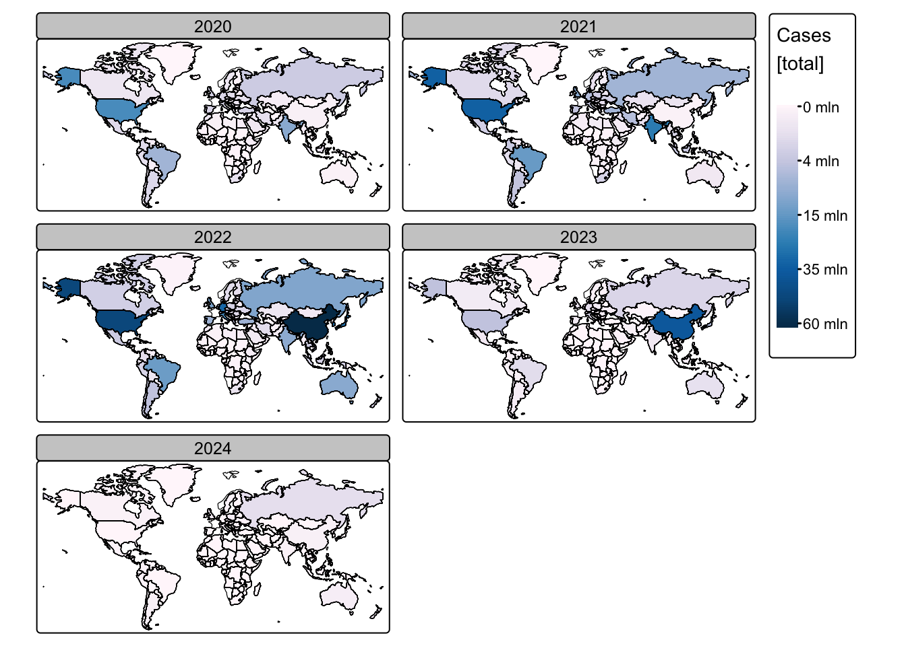
# Create a faceted map for COVID-19 deaths
# Ensure only rows with a valid Year are used
tm_shape(ne_cntry_covid[!is.na(ne_cntry_covid$Year), ]) +
# Fill the country polygons based on the total 'Deaths' attribute
# A square-root scale is applied, using the "brewer.pu_rd" palette
# to differentiate from the cases map
tm_fill(fill = "Deaths",
fill.scale = tm_scale_continuous_sqrt(values = "brewer.pu_rd"),
fill.legend = tm_legend(title = "Deaths \n[total]")) +
# Set the coordinate reference system to Miller projection
tm_crs("+proj=mill") +
# Facet the map by "Year", arranging the individual maps in 2 columns
tm_facets_wrap(by = "Year", ncol = 2) +
# Add country borders over the faceted deaths map for enhanced readability
tm_shape(ne_cntry_covid) + tm_borders(col = "black")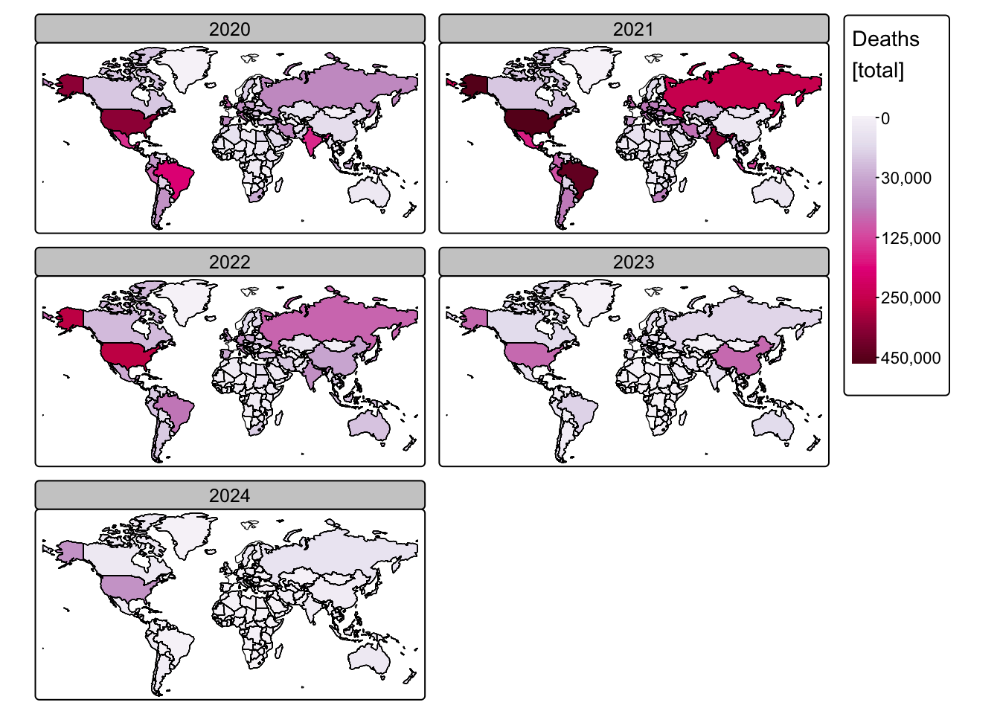
While the above maps are useful, they offer only limited insight because each country has a different population size. A more informative approach is to express COVID-19 cases and deaths as percentages of each country’s population, thereby enabling a fairer comparison across regions.
The following block of R code calculates the annual cases and deaths normalised by population size and expresses them as percentages. The resulting values are stored in two new columns: Norm_cases and Norm_deaths.
# Normalise cases and deaths by population
# For the total data (aggregated over the entire period):
ne_cntry_covid_total <- ne_cntry_covid_total %>%
# Use mutate() to create two new columns:
# - Norm_cases: the total cases normalised per 100 people,
# computed by dividing total Cases by the estimated population and multiplying by 100
# - Norm_deaths: the total deaths normalised per 100 people, using the same approach
mutate(Norm_cases = (Cases / POP_EST) * 100,
Norm_deaths = (Deaths / POP_EST) * 100)
# For the yearly data:
ne_cntry_covid <- ne_cntry_covid %>%
# Similarly, create new columns for normalised cases and deaths per 100 people
mutate(Norm_cases = (Cases / POP_EST) * 100,
Norm_deaths = (Deaths / POP_EST) * 100)Redo maps using normalised values:
# Plot total COVID-19 cases
tm_shape(ne_cntry_covid_total) +
tm_fill(fill = "Norm_cases",
fill.scale = tm_scale_continuous_sqrt(values = "brewer.pu_bu"),
fill.legend = tm_legend(title = "Cases \n[% pop.]")) +
tm_crs("+proj=robin") +
tm_layout(frame = FALSE) +
tm_borders(col = "black") +
tm_scalebar(position = c("left", "center"), breaks = c(0,2500,5000), width = 20) +
tm_title("Normalised total COVID-19 cases", size = 1) +
tm_shape(ne_box) + tm_borders("black")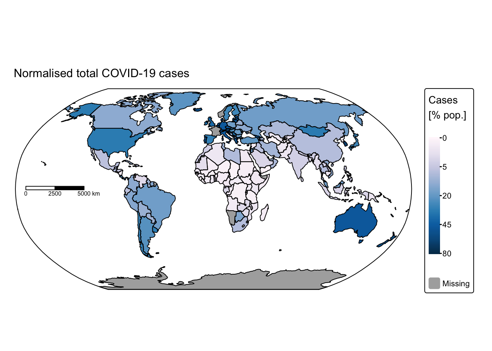
# Plot total COVID-19 deaths
tm_shape(ne_cntry_covid_total) +
tm_fill(fill = "Norm_deaths",
fill.scale = tm_scale_continuous_sqrt(values = "brewer.pu_rd"),
fill.legend = tm_legend(title = "Deaths \n[% pop.]")) +
tm_crs("+proj=robin") +
tm_layout(frame = FALSE) +
tm_borders(col = "black") +
tm_scalebar(position = c("left", "center"), breaks = c(0,2500,5000), width = 20) +
tm_title("Normalised total COVID-19 deaths", size = 1) +
tm_shape(ne_box) + tm_borders("black")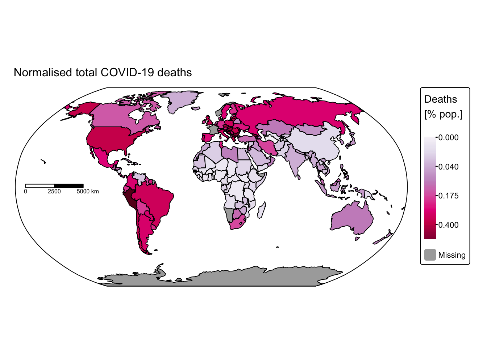
# Plot COVID-19 cases
tm_shape(ne_cntry_covid[!is.na(ne_cntry_covid$Year), ]) +
tm_fill(fill = "Norm_cases",
fill.scale = tm_scale_continuous_sqrt(values = "brewer.pu_bu"),
fill.legend = tm_legend(title = "Cases \n[% pop.]")) +
tm_crs("+proj=mill") +
tm_facets_wrap(by = "Year", ncol = 2) +
tm_shape(ne_cntry_covid) + tm_borders(col = "black")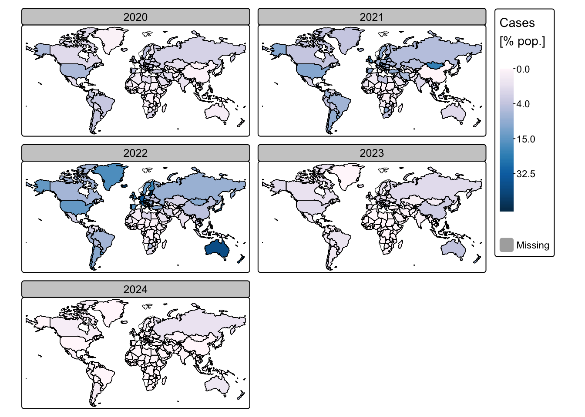
# Plot COVID-19 deaths
tm_shape(ne_cntry_covid[!is.na(ne_cntry_covid$Year), ]) +
tm_fill(fill = "Norm_deaths",
fill.scale = tm_scale_continuous_sqrt(values = "brewer.pu_rd"),
fill.legend = tm_legend(title = "Deaths \n[% pop.]")) +
tm_crs("+proj=mill") +
tm_facets_wrap(by = "Year", ncol = 2) +
tm_shape(ne_cntry_covid) + tm_borders(col = "black")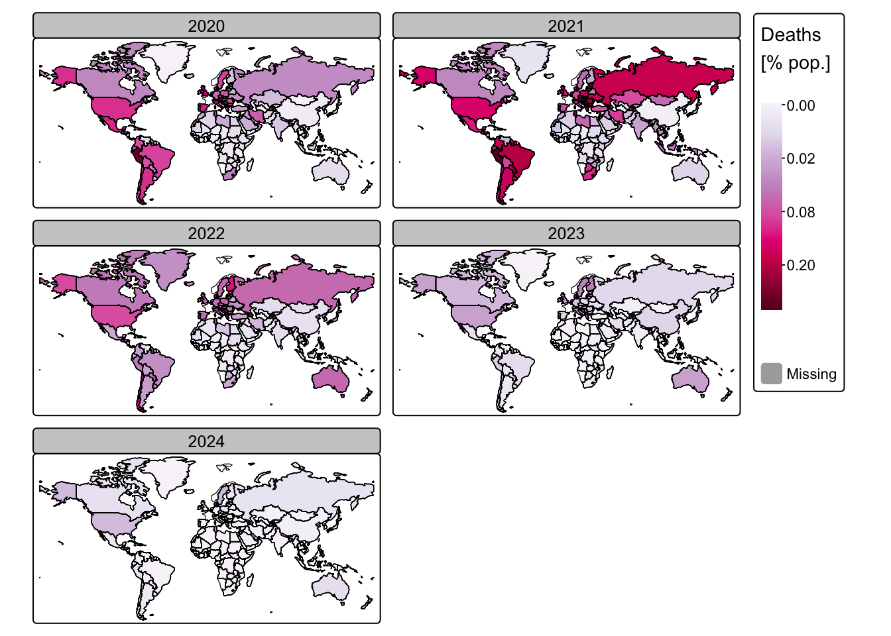
Another effective approach to visualising our data is to represent
the number of deaths as a percentage of the total COVID-19 cases. The
following block of R code adds a new column to
ne_cntry_covid with COVID-19-related deaths expressed as a
percentage of total cases:
# Normalise deaths by cases to calculate the case fatality rate (as a percentage)
# Use if_else() to prevent division by zero:
# - If "Cases" equals 0, then return NA_real_ (a missing value for numeric data)
# - Otherwise, compute (Deaths / Cases) * 100
ne_cntry_covid_total <- ne_cntry_covid_total %>%
mutate(Norm_deaths2 = if_else(Cases == 0, NA_real_, (Deaths / Cases) * 100))
# Repeat the same calculation for the yearly data
ne_cntry_covid <- ne_cntry_covid %>%
mutate(Norm_deaths2 = if_else(Cases == 0, NA_real_, (Deaths / Cases) * 100))Plot COVID-19-related deaths normalised to cases:
# Plot total COVID-19 deaths
tm_shape(ne_cntry_covid_total) +
tm_fill(fill = "Norm_deaths2",
fill.scale = tm_scale_continuous_sqrt(values = "brewer.pu_rd"),
fill.legend = tm_legend(title = "Deaths \n[% cases]")) +
tm_crs("+proj=robin") +
tm_layout(frame = FALSE) +
tm_borders(col = "black") +
tm_scalebar(position = c("left", "center"), breaks = c(0,2500,5000), width = 20) +
tm_title("Total COVID-19 deaths as percentage of cases", size = 1) +
tm_shape(ne_box) + tm_borders("black")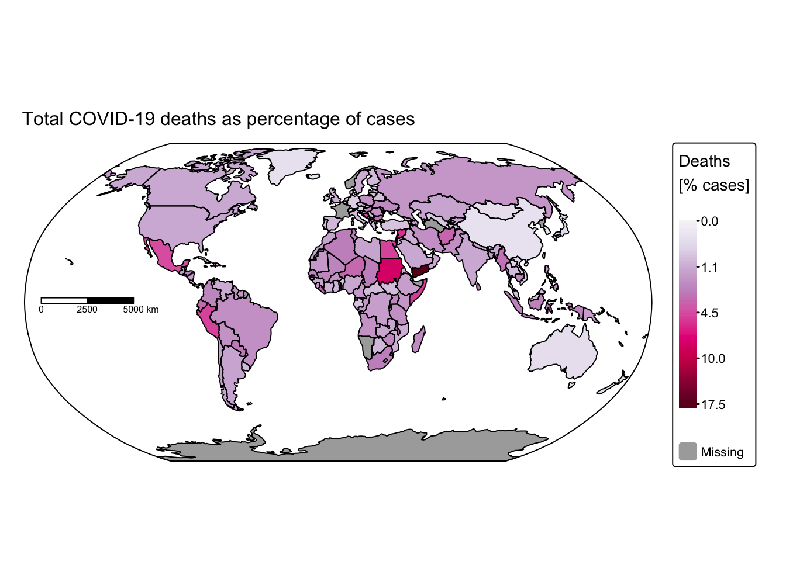
# Plot COVID-19 deaths
tm_shape(ne_cntry_covid[!is.na(ne_cntry_covid$Year), ]) +
tm_fill(fill = "Norm_deaths2",
fill.scale = tm_scale_continuous_sqrt(values = "brewer.pu_rd"),
fill.legend = tm_legend(title = "Deaths \n[% cases]")) +
tm_crs("+proj=mill") +
tm_facets_wrap(by = "Year", ncol = 2) +
tm_shape(ne_cntry_covid) + tm_borders(col = "black")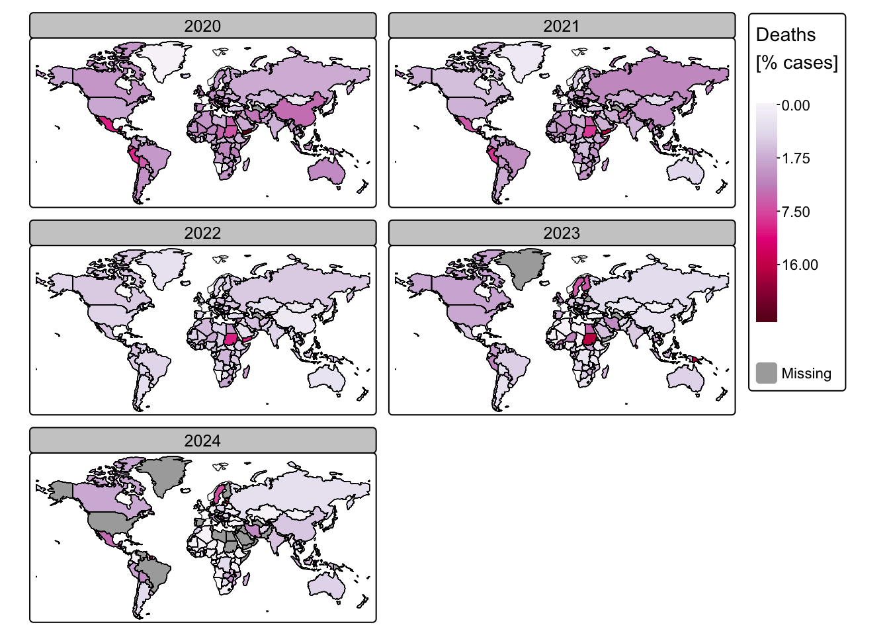
Next, we aim to plot the month in 2020 during which the number of new cases peaked. To do this, we must first restrict the WHO data to 2020 and then identify, for each country, the month with the highest number of cases.
# Filter the dataset for the year 2020
# Select only rows where Date_reported is between January 5, 2020 and December 31, 2020
# This effectively drops data for years other than 2020
covid_data_2020 <- covid_data_cleaned %>%
filter(Date_reported >= as.Date("2020-01-05") & Date_reported <= as.Date("2020-12-31"))
# Calculate monthly COVID-19 cases and deaths for 2020
# Group the filtered data by Month and Country_code
covid_months <- covid_data_2020 %>%
group_by(Month, Country_code) %>%
summarise(
# Sum new cases for each month and country,
# treating any negative values as zero (using pmax(New_cases, 0))
Cases = sum(pmax(New_cases, 0), na.rm = TRUE),
# Sum new deaths similarly
Deaths = sum(pmax(New_deaths, 0), na.rm = TRUE),
# Remove grouping after summarisation
.groups = 'drop'
)
# Extract the month with the maximum number of cases for each country
# Group the monthly data by Country_code to work within each country separately
covid_months <- covid_months %>%
group_by(Country_code) %>%
# For each country, select the row (month) with the highest number of Cases
slice_max(order_by = Cases, n = 1) %>%
# Convert the Month column to numeric and create a new column with the month name
# 'month.name' is a built-in vector in R that contains the full names of months
mutate(Month = as.numeric(as.character(Month)),
Month_name = month.name[Month]) %>%
ungroup() # Remove grouping
# Join spatial data with monthly COVID-19 data
# Perform a full join to merge ne_cntry with the COVID-19 monthly summary (covid_months)
# using the common field "Country_code"
ne_cntry_covid_months = full_join(ne_cntry, covid_months, by = join_by(Country_code))
# Inspect the resulting dataset
# Print the names of all columns in the merged dataset to verify the available fields
names(ne_cntry_covid_months)## [1] "NAME" "POP_EST" "CONTINENT" "REGION_UN" "SUBREGION"
## [6] "Country_code" "geometry" "Month" "Cases" "Deaths"
## [11] "Month_name"Next, we visualise the months using tmap, aiming to assign similar colours to months that fall within the same season. By default, tmap displays the months in alphabetical order in the map legend. To ensure they appear in their proper chronological order, we convert the Month_name field into a factor with an ordered sequence.
In R, a factor is a data type used to represent categorical variables. Instead of storing data as raw text or numbers, factors store data as a set of predefined categories called levels, each associated with an underlying integer code. This structure is especially useful for statistical analysis and visualisation, as it allows one to control the order of categories (for example, ensuring that months appear in chronological order rather than alphabetical order).
# Define custom colours for each month
# Create a named vector with custom hex colour codes for each month
# These colours are taken from the met.demuth palette:
# (https://github.com/BlakeRMills/MetBrewer).
custom_colours <- c("January" = "#262d42",
"February" = "#41485f",
"March" = "#f7c267",
"April" = "#e5ae4a",
"May" = "#d39a2d",
"June" = "#b64f32",
"July" = "#9b332b",
"August" = "#591c19",
"September"= "#b9b9b8",
"October" = "#8b8b99",
"November" = "#5d6174",
"December" = "#4F556A")
# Set factor levels for Month_name
# Convert Month_name into a factor with levels ordered as specified in custom_colours
# This ensures that the colours in plots follow the intended order (January to December)
ne_cntry_covid_months$Month_name <- factor(ne_cntry_covid_months$Month_name,
levels = names(custom_colours))
# Plot the month with highest COVID-19 infection numbers in 2020
# Extract the bounding box for the spatial object 'ne_box' to ensure
# the map covers the desired area
bbox_box <- st_bbox(ne_box)
# Start creating the map:
tm_shape(ne_cntry_covid_months[!is.na(ne_cntry_covid_months$Month), ], bbox = bbox_box) +
# Fill the country polygons based on the 'Month_name' field
# Use the custom_colours for the fill scale by passing them via tm_scale()
tm_fill(fill = "Month_name",
fill.scale = tm_scale(values = custom_colours),
fill.legend = tm_legend(title = "Month")) +
# Set the coordinate reference system to Robinson projection for a balanced global view
tm_crs("+proj=robin") +
# Remove the default frame around the map
tm_layout(frame = FALSE) +
# Add a scale bar with specified position, break points, and width
tm_scalebar(position = c("left", "center"), breaks = c(0,2500,5000), width = 20) +
# Add a title to the map
tm_title("Month with highest COVID-19 infection numbers (2020)", size = 1) +
# Overlay the country boundaries for clarity by adding another layer
tm_shape(ne_cntry) + tm_borders(col = "black") +
# Overlay the bounding box for geographic context
tm_shape(ne_box) + tm_borders("black")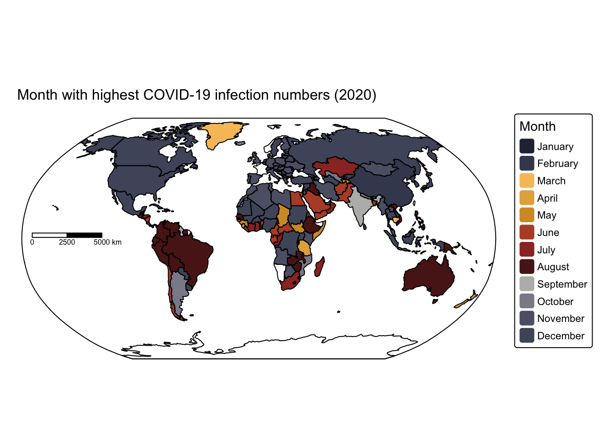
The map indicates that, at least during the first year of the COVID‑19 pandemic, infection rates peaked during the colder months in both the northern and southern hemispheres, with only a few exceptions.
In this practical, we used R to generate a series of maps illustrating the spatial distribution of COVID‑19 cases and deaths, based on data obtained from the WHO. The exercise demonstrated the utility of the dplyr package from the tidyverse for data wrangling and the tmap package for map visualisation. The sf package was employed to import the spatial data into a spatial data frame, thereby facilitating the creation of these maps.
This practical showcased a diverse range of R functions. A summary of these is presented below:
base R functions
as.Date(): converts character or numeric data into a
Date object using a specified format. It is essential for handling date
arithmetic and comparisons in time‐series analysis.
as.character(): converts its input into character
strings. It is often used to ensure that numerical or factor data are
treated as text when needed.
as.numeric(): converts its argument into numeric
form, which is essential when performing mathematical operations. It is
often used to change factors or character strings into numbers for
computation.
attr(): is used to access or modify the attributes
of an R object, such as names, dimensions, or class. It allows you to
retrieve metadata stored within an object or to assign new attribute
values when needed.
c(): concatenates its arguments to create a vector,
which is one of the most fundamental data structures in R. It is used to
combine numbers, strings, and other objects into a single
vector.
factor(): creates a factor (categorical variable)
from a vector, optionally with a predefined set of levels. Factors are
crucial for statistical modelling and for controlling the ordering of
categories in plots.
format(): converts objects to character strings with
a specified format, particularly useful for dates and numbers. It helps
in standardising the display of data for reporting and
plotting.
head(): returns the first few elements or rows of an
object, such as a vector, matrix, or data frame. It is a convenient tool
for quickly inspecting the structure and content of data.
dplyr (tidyverse) functions
%>% (pipe operator): passes the output of one
function directly as the input to the next, creating a clear and
readable chain of operations. It is a hallmark of the tidyverse,
promoting an intuitive coding style.
filter(): subsets rows of a data frame based on
specified logical conditions. It is essential for extracting relevant
data for analysis.
full_join(): merges two data frames by one or more
common key columns, keeping all rows from both sets. It is particularly
useful when combining spatial and non-spatial data to ensure no
information is lost.
group_by(): organises data into groups based on one
or more variables, setting the stage for group-wise operations. It is
often used together with summarise or mutate.
if_else(): evaluates a condition for each element of
a vector and returns one value if the condition is TRUE and another if
it is FALSE. It is a vectorised alternative to the standard if/else
statement that prevents unexpected recycling and maintains type
consistency.
join_by(): specifies columns to be used for joining
two data frames, clarifying the join criteria. It enhances the
readability and flexibility of join operations in dplyr.
mutate(): adds new columns or transforms existing
ones within a data frame. It is essential for creating derived variables
and modifying data within the tidyverse workflow.
pmax(): returns the parallel (element-wise) maximum
of its input vectors, often used to set lower bounds (e.g. converting
negative values to zero). It helps to enforce non-negativity in
aggregated data such as case counts.
rename(): changes column names in a data frame to
make them more descriptive or consistent. It is an important tool for
data cleaning and organization.
select(): extracts a subset of columns from a data
frame based on specified criteria. It simplifies data frames by keeping
only the variables needed for analysis.
slice_max(): selects rows with the highest values in
a specified column, useful for identifying maximum cases within groups.
It is a straightforward way to pinpoint the top observation in each
subgroup.
summarise(): reduces multiple values down to a
single summary statistic per group in a data frame. When used with
group_by(), it facilitates the computation of aggregates
such as mean, sum, or count.
ungroup(): removes grouping from a data frame that
was previously grouped using group_by(). It resets the data structure to
prevent unintended effects on subsequent analyses.
readr (tidyverse) functions
read_csv(): reads a CSV file into a tibble (a modern
version of a data frame) while providing options for handling missing
values and specifying column types. It is optimized for speed and
ease-of-use, making data import straightforward in the tidyverse.ggplot2 (tidyverse) functions
aes(): defines aesthetic mappings in ggplot2 by
linking data variables to visual properties such as color, size, and
shape. It forms the core of ggplot2’s grammar for mapping data to
visuals.
facet_wrap(): splits a ggplot2 plot into multiple
panels based on a factor variable, allowing for side-by-side comparison
of subsets. It automatically arranges panels into a grid to reveal
patterns across groups.
geom_line(): adds line geometries to a plot,
connecting data points in sequence. It is commonly used to show trends
over time or relationships between continuous variables.
ggplot(): initialises a ggplot object and
establishes the framework for creating plots using the grammar of
graphics. It allows for incremental addition of layers, scales, and
themes to build complex visualizations.
labs(): allows you to add or modify labels in a
ggplot2 plot, such as titles, axis labels, and captions. It enhances the
readability and interpretability of visualizations.
scale_x_date(): customises the x-axis for date data,
allowing specification of breaks and labels. It is particularly useful
for time-series data where controlling date formatting enhances
readability.
scale_y_log10(): applies a logarithmic
transformation (base 10) to the y-axis scale, which can help in
visualising data with a wide range or exponential growth. It makes
subtle trends more apparent by compressing large values.
theme(): modifies non-data elements of a ggplot,
such as fonts, colors, and backgrounds. It provides granular control
over the overall appearance of the plot.
unit(): constructs unit objects that specify
measurements for graphical parameters, such as centimeters or inches. It
is often used in layout and annotation functions for precise control
over plot elements.
sf functions
read_sf(): reads spatial data from various file formats
into an sf object. It simplifies the import of geographic data for
spatial analysis.tmap functions
tm_borders(): draws border lines around spatial
objects on a map. It is often used in combination with fill functions to
delineate regions clearly.
tm_crs(): sets or retrieves the coordinate reference
system for a tmap object. It ensures that all spatial layers are
correctly projected.
tm_facets_wrap(): creates a faceted layout by
splitting a map into multiple panels based on a grouping variable. It is
useful for comparing maps across different time periods or
categories.
tm_fill(): fills spatial objects with color based on
data values or specified aesthetics in a tmap. It is a key function for
thematic mapping.
tm_layout(): customises the overall layout of a
tmap, including margins, frames, and backgrounds. It provides fine
control over the visual presentation of the map.
tm_legend(): customises the appearance and title of
map legends in tmap. It is used to enhance the clarity and presentation
of map information.
tm_scale(): customises the colour scale used in tmap
fills, enabling the application of continuous or categorical colour
palettes. It supports both numeric transformations and the assignment of
custom values.
tm_scalebar(): adds a scale bar to a tmap to
indicate distance. It can be customised in terms of breaks, text size,
and position.
tm_scale_continuous(): applies a continuous color
scale to a raster layer in tmap. It is suitable for representing numeric
data with smooth gradients.
tm_scale_continuous_sqrt(): applies a square root
transformation to a continuous color scale in tmap. It is useful for
visualizing data with skewed distributions.
tm_shape(): defines the spatial object that
subsequent tmap layers will reference. It establishes the base layer for
building thematic maps.
tm_title(): adds a title and optional subtitle to a
tmap, providing descriptive context. It helps clarify the purpose and
content of the map.
tmap_mode(): switches between static (“plot”) and
interactive (“view”) mapping modes in tmap. It allows users to choose
the most appropriate display format for their needs.